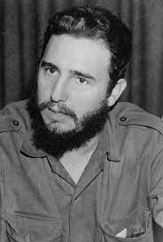

Um breve resumo
Fidel Alejandro Castro Ruz, ou simplesmente Fidel Castro (nasceu em Birán no dia 13 de agosto de 1926 – e faleceu na cidade da Havana no dia 25 de novembro de 2016), foi um político e revolucionário cubano que governou a República de Cuba como primeiro-ministro de 1959 a 1976 e depois como presidente de 1976 a 2008.
